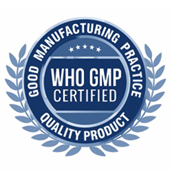
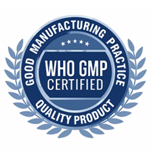

🌿 100% Organic Spirulina
100% Organic Spirulina — это премиальный растительный нутрицевтический суперфуд, предназначенный для ежедневной детокс-поддержки, энергии и общего благополучия. Данная нутрицевтическая добавка изготовлена из чистой органически выращенной спирулины (Arthrospira platensis) и является богатым источником растительного белка, хлорофилла, антиоксидантов, витаминов и необходимых минералов для поддержания естественной жизненной энергии и метаболического баланса.
Состав и активные компоненты (на 1 таблетку):
Спирулина (Arthrospira platensis) — 500 мг
Другие ингредиенты: органический порошок спирулины, антислеживающий агент
Форма выпуска: 150 таблеток (215 г) во флаконе.
Как действует продукт
✓ Спирулина — это питательная сине-зелёная водоросль, содержащая 60–70% растительного белка, поддерживающая ежедневный нутритивный баланс.
✓ Содержит хлорофилл, каротиноиды и фикоцианин, способствующие антиоксидантной защите.
✓ Поддерживает естественные процессы детоксикации организма.
✓ Способствует поддержанию энергии и нормальной работы иммунной системы.
Пищевая ценность (на 1 таблетку)
Калорийность — 7 ккал
Белок — 1,12 г
Общий жир — 0,12 г
Насыщенные жиры — 0,06 г
Трансжиры — 0,001 г
Углеводы — 0,4 г
Сахар — 0 г
Общие каротиноиды — 7,2 мг
Хлорофилл — 22 мг
Фикоцианин — 280 мг
Основные показания к применению
✓ Для ежедневной детокс-поддержки и естественного очищения организма.
✓ Для поддержания уровня энергии и нутритивного баланса.
✓ Для поддержки иммунной системы.
✓ При повышенной потребности в питательных веществах.
✓ Для поддержания общего тонуса и самочувствия.
Рекомендации по применению
✓ Для взрослых:
4–6 таблеток в день или по рекомендации специалиста.
⚠ Важно:
Перед применением проконсультируйтесь с врачом, если вы беременны, кормите грудью или принимаете лекарственные препараты. Прекратите использование при возникновении нежелательных реакций.
Противопоказания
✖ Индивидуальная непереносимость компонентов.
✖ Применение во время беременности и в период лактации — только по рекомендации врача.
Кому особенно рекомендуется
✓ Людям, ищущим растительный источник белка.
✓ Тем, кто нуждается в ежедневной детокс- и антиоксидантной поддержке.
✓ Людям с активным образом жизни.
✓ Тем, кто хочет естественно поддерживать иммунитет и обмен веществ.
Рекомендации по применению
✓ Для взрослых:
✓ Высокое содержание натурального растительного белка (60–70%).
✓ Без ГМО.
✓ Не содержит глютен, лактозу и сахар.
✓ Подходит для вегетарианцев.
✓ Производится в соответствии со стандартами качества.
Дополнительная информация
⚠ Не является лекарственным средством.
⚠ Хранить в недоступном для детей месте.
 
